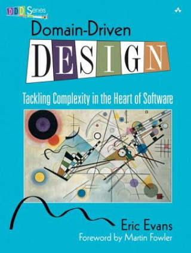
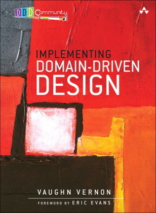
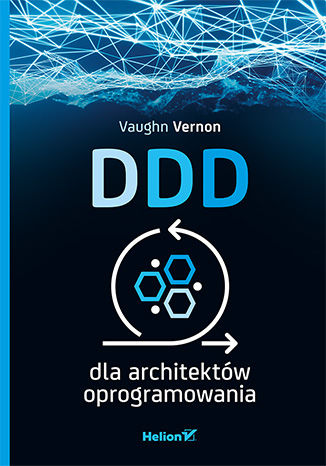
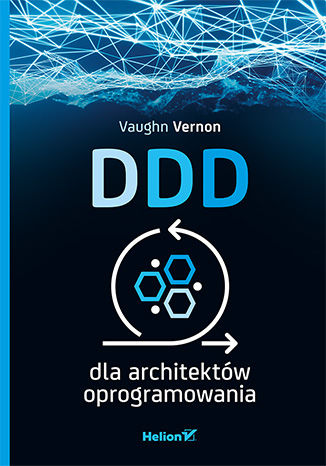
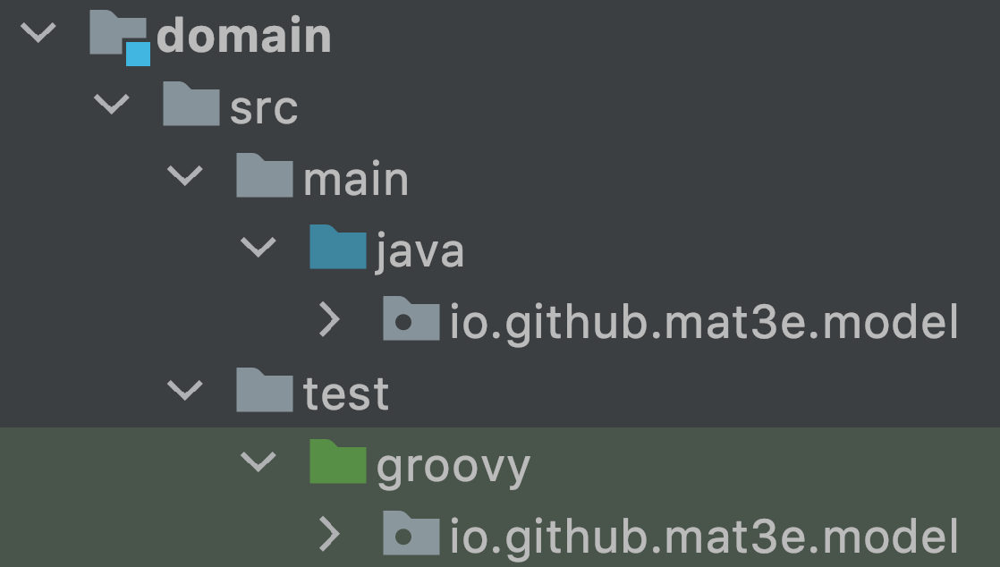

EventSotrming, DDD, Czysta Architektura
przegląd i wprowadzenie


DDD
Strategiczne |
Taktyczne |
DDD Strategiczne
- Znajdowanie domen
- Domena = przestrzeń problemu
- Core domain = $$$
- Supporting subdomain
- Generic subdomain
DDD Strategiczne - przykład
Bajki
Dyskusje
Identity & Access
Management
Bounded Context
- Przestrzeń rozwiązania
-
"Wszędobylski język" (Ubiquitous Language)
- Wspólne rozumienie pojęć w obrębie kontekstu
- Np. "produkt" w magazynie, "produkt" w koszyku zakupowym
- Niby DDD = domeny, ale BC nawet ważniejszy
- BC = potencjalny mikroserwis
Bounded Context - cd.
BC - przykład
Fairy tales
 |
|
|---|---|
| Mama | |
| Dom | |
| Wilk | |
Jak to znaleźć i zaplanować?
EventStorming!
- Złota zasada: zdarzenia (czasowniki, czas przeszły, dokonany), a NIE struktury danych (rzeczowniki)
- Big Picture ES - znajdowanie domen
- Process-Level ES - odkrywanie Bounded Contextów
- Design-Level ES - taktyczne DDD w obrębie BC
- Komendy (zmiana stanu systemu) i widoki
DDD
Strategiczne |
Taktyczne |
Building blocks - 1/5
- Tożsamość określona identyfikatorem
- Agregowanie/hermetyzacja niezmienników, fizyki biznesu
- Brak getterów/setterów, metody biznesowe
- Reguły spójne natychmiast i jednocześnie
- Np. faktura (dodatnia wartość) z numerem faktury i pozycje na fakturze (min. 1)
Building blocks - 2/5
- Zapis i odczyt agregatu
- Jedna transakcja bazodanowa (~reguły spójne natychmiast)
- Agregat wczytany? Gwarancja niezmienników

- Bezstanowa logika domenowa
- Np. kalkulator/księgowy działający na fakturze
Building blocks - 3/5

- Nośniki informacji, struktury danych
- Tożsamość wynikająca z właściwości
- Np. pieniądz, 2x 50 groszy tożsame z 1x 1 zł
- Zdarzenia komunikowane światu, powiązane z ES
Building blocks - 4/5
Specification
- Obiektowy
if, metodaisSatisfiedBy - Sterowanie operacjami w domenie
- Lepsze pokrycie testami
Policy
- Wzorzec strategii
- Np. serwis "księgowy" nalicza należność, a w zależności od kraju przekazujemy inną politykę (strategię) liczenia podatku
Building blocks - 5/5
- Oszustwo, dodatkowy, nieoficjalny klocek DDD
- Zrzut stanu, zdjęcie rentgenowskie agregatu
- Wykorzystywane do mapowania pod API i pod bazę danych
DDD Taktyczne - kod
public interface Aggregate<ID, T>
extends DomainEntity<ID, T> {
}
Jaki agregat w Trzech małych świnkach?
Założenia
- Budowanie domu: słoma, drewno, cegły
- Zdmuchnięcie domu przez wilka => ucieczka świnki do sąsiada
- Rezygnacja po 2 nieudanych próbach zdmuchnięcia domu
- Wyciąganie wniosków i nauka na błędach
-
Pominięte:
- Mama świnek
- Wchodzenie przez komin
- Zjadanie świnek
Czyli co?


{kind=link}
Big Picture
Design-Level
Ćwiczenie 1
-
Odpalić repozytoria mat3e/3pigs-ddd
oraz full-stack-engineering/java-clean-architecture
- Bonus - wersja JS (WIP): mat3e/3pigs-ddd-js
- Skupić się na części
domain - Co jest domeną, a co jest Bounded Contextem w każdym projekcie?
Ćwiczenie 2
W przykładowych projektach odnaleźć building blocki: agregaty, encje,
repozytoria, serwisy domenowe itd.
DDD
|   | ||
 

|
||
|
|


|
Clean Architecture


|

|
|  |





User Story
- Jako użytkownik, chcę poznać bajkę o trzech świnkach, żeby móc ją
opowiedzieć innym
- ...
-
Jako świnka, chcę zbudować dom, dostosowany do moich potrzeb
- Dokumentowanie i utrwalanie informacji
-
Jako wilk chcę zdmuchnąć dom, żeby móc złapać świnkę
- Rejestr - z tym domem już próbowano
Ćwiczenie 3
- Przejrzeć warstwę
appw projektach - Jakie komendy/operacje są dostępne w systemach? Jakie widoki?
- Porównać komendy z 3 świnek z komendami z EventStormingu
- Które komendy są wystawione na świat przy pomocy adapterów?
Ćwiczenie 4
- Rozszerzyć trzy świnki o wchodzenie przez komin, np.
- Agregat dom powinien dostać kominek i metodę rozpalania, np.
litFire - Agregat dom powinien móc wpuścić wilka (np.
enterThroughChimney) - Gdy pali się w kominku, ww. metoda powinna skutkować zdarzeniem,
np.
WolfResignedFromAttacking - Gdy brak ognia -
HouseAbandoned - Serwis wilk powinien wołać
enterThroughChimneyzamiast publikować zdarzenia - Zmodyfikować adapter logujący, żeby bajka uwzględniała wchodzenie przez komin
- Agregat dom powinien dostać kominek i metodę rozpalania, np.
- Czy można byłoby obsłużyć nową funkcję tylko w aplikacji?
Dzięki!
 mat3e.github.io/talks/ddd-workshop/isa
mat3e.github.io/talks/ddd-workshop/isa